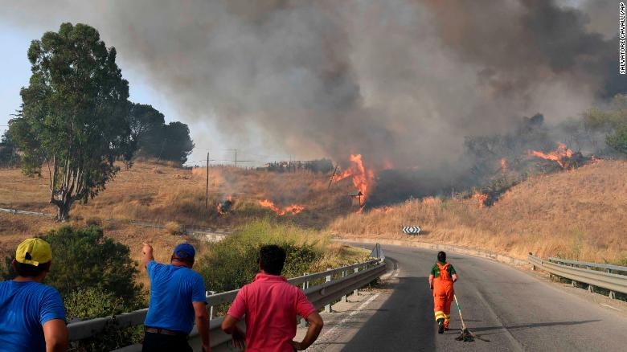
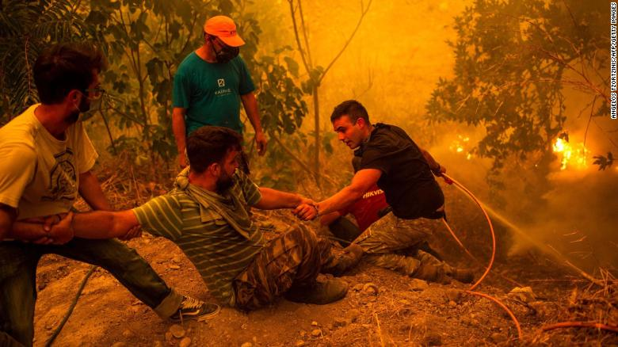

Why wildfires happen: Debunking the myth that arson is to blame more than climate change

August 12, 2021 By Ivana Kottasová, CNN
Wildfires tearing across the Mediterranean have killed dozens of people and reduced entire villages to ash. Some leaders have emphasized the role of arsonists in the devastation, while others have been accused of using climate change as a cover for their own poor disaster management. The result is a confusing message of who and what is to blame.
Fires have raged in Greece, Northern Macedonia, Turkey, Algeria, Italy and Cyprus in recent days. Firefighters in the US, too, have been battling blazes across 15 states as the Dixie Fire, California's second largest ever, continues to grow. Last month, parts of Siberia and British Columbia both experienced the largest fires in years.
Italian minister for ecological transition Roberto Cingolani acknowledged the role of climate change in the disaster, but he made a point recently of emphasizing that 70% of the countries fires were caused by humans -- either accidentally or on purpose.

In Algeria, where 65 people, including 25 soldiers, died because of wildfires in recent days, the interior minister Kamel Beldjoud struck a similar tone.
"We've known about wildfires for a long time. Dozens at the same time is definitely a criminal act," he told Al-Nahar TV Tuesday.
Conversely, Greek Prime Minister Kyriakos Mitsotakis has been accused of blaming the role of climate change in the fires to deflect criticism for poor forest management and disaster preparedness.
After backlash, he was forced to clarify that he meant climate change was "the explanation, but not an excuse, or an alibi." He reasserted, however, that his government has "done everything that was humanly possible, but in many cases this did not seem to be enough in the unequal battle with nature."
What's the role of climate change?
Questions are now being raised around who and what is to blame for the fires. Climate change, arsonists, or both?
While there are many factors that influence wildfires, it is climate change that is making them bigger and more frequent, and is causing them to happen in places where they previously weren't very common.
Hikmet Ozturk, a forestry expert with the Turkish Foundation for Combating Soil Erosion, an NGO, said that while 95% of fires in Turkey are caused by people, the spread of the fires is worsened by climate change.
"Typical weather conditions in the summer for the area is hot and dry, which means the risk of fires is already high, and climate change raises that risk," he said.
Europe recorded its second hottest July on record this year, according to the Copernicus Climate Change Service, with much of southeastern Europe experiencing severe heatwaves at the end of the month.
And the extreme heat is continuing in August: On Wednesday, Europe's all-time heat record was unofficially broken -- the data still needs to be validated -- when the temperature reached 48.8 degrees Celsius (120 F) in the Sicilian city of Syracuse, according to the Sicilian Agrometeorological Information Service (SIAS).
A landmark report published Monday by the UN's International Panel on Climate Change said that 38 weather conditions that promote wildfires have become more probable in southern Europe over the last century. Globally, the heat waves and droughts worsening fires have increased too.
It found that between 1979 and 2013, "the global burnable area affected by long fire-weather seasons doubled, and the mean length of the fire-weather season increased by 19%," even though at the global scale, the total burned area decreased between 1998 and 2015 due mostly to changes in land use.
"In summary, there is high confidence that concurrent heat waves and droughts have increased in frequency over the last century at the global scale due to human influence. There is medium confidence that weather conditions that promote wildfires (fire weather) have become more probable in southern Europe, northern Eurasia, the US, and Australia over the last century," the report said.
In other words, these longer and more intense heat waves and droughts in many places on the planet mean there is more fuel available because vegetation is dry and available to burn for longer.
"With higher temperatures, more fuel will be dry and the relative humidity of the air will be lower. Both of these factors contribute to faster moving and more intense wildfires, with larger flames and more energy, making them harder to fight by firefighters on the ground," said Thomas Smith, an assistant professor in Environmental Geography at the London School of Economics.